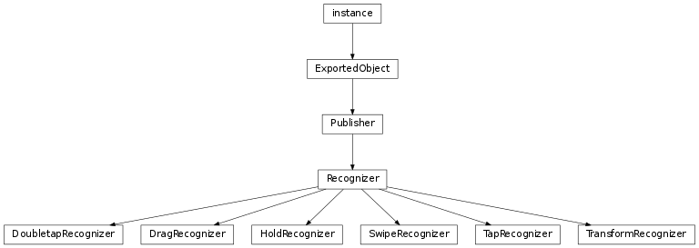
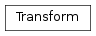

Gesture Support¶
The namespace libavg.gesture exposes a group of configurable gesture recognizers.


-
class
libavg.gesture.DoubletapRecognizer(node[, maxTime=MAX_DOUBLETAP_TIME, maxDist=MAX_TAP_DIST, initialEvent=None, possibleHandler=None, failHandler=None, detectedHandler=None])¶ Bases:
libavg.gesture.RecognizerA
DoubletapRecognizerdetects doubletaps: Two short touches in quick succession without a large change of the cursor position.Parameters: - maxTime – The maximum time that each phase of the tap may take.
- maxDist – The maximum distance the contact may move in millimeters.
-
class
libavg.gesture.DragRecognizer(eventNode[, coordSysNode=None, initialEvent=None, direction=ANY_DIRECTION, directionTolerance=DIRECTION_TOLERANCE, friction=-1, minDragDist=None, possibleHandler=None, failHandler=None, detectedHandler=None, moveHandler=None, upHandler=None, endHandler=None])¶ Bases:
libavg.gesture.RecognizerA
DragRecognizerattaches itself to a node’s cursor events and delivers higher-level callbacks that can be used to implement dragging or drag-like functionality.DragRecognizersupports inertia after the node is released.Parameters: - coordSysNode (avg.Node) – Used to determine the coordinate system for the offsets returned by the
callbacks. If
coordSysNodeis not given,eventNodeis used as default. TheDragRecognizernever modifies any nodes itself.coordSysNodecan be used to separate the node that is the ‘handle’ for the events from the node that is being moved - for instance, to allow moving a window by dragging the title bar. - direction – Can be used to constrain the recognizer to
VERTICALorHORIZONTALdrags only. If one of these constants is passed asdirection, the recognizer invokesonPossible()when the down event arrives, then determines whether the drag is a predominantly horizontal or vertical drag and invokes eitheronDetected()oronFail()depending on the result. - directionTolerance (float) – A tolerance angle in radians for the detection of horizontal and vertical drags.
- eventNode (avg.Node) – The node to attach to. The
DragRecognizerregisters an event handler to react to any contacts for this node. - friction (float) – If set, this parameter enables inertia processing. It describes how quickly the drag comes to a stop after the cursor is released.
- minDragDist (float) – Minimum distance in mm that the cursor must move for the recognizer to switch
from
POSSIBLEtoDETECTED. Default is either 0 (forANY_DIRECTIONrecognizers) orMIN_DRAG_DIST(for constrained recognizers). - moveHandler – A shortcut for
Recognizer.subscribe(Recognizer.MOTION, moveHandler). - upHandler – A shortcut for
Recognizer.subscribe(Recognizer.UP, upHandler).
Messages:
To get these messages, call
Publisher.subscribe().-
Recognizer.MOTION(offset)¶ Emitted when the drag should cause a position change. This usually happens in response to a
CURSORMOTIONevent, but may also happen because of inertia.Parameters: offset (avg.Point2D) – The current offset from the start of the drag in coordinates relative to the coordSysNode‘s parent.
-
Recognizer.UP(offset)¶ Emitted when the cursor is released. If inertia is enabled, there may be move events after the up event.
Parameters: offset (avg.Point2D) – The current offset from the start of the drag in coordinates relative to the coordSysNode‘s parent.
-
abort()¶ Aborts the present recognized gesture and sliding caused by inertia
- coordSysNode (avg.Node) – Used to determine the coordinate system for the offsets returned by the
callbacks. If
-
class
libavg.gesture.HoldRecognizer(node[, delay=HOLD_DELAY, maxDist=MAX_TAP_DIST, initialEvent=None, possibleHandler=None, failHandler=None, detectedHandler=None, endHandler=None])¶ Bases:
libavg.gesture.RecognizerA
HoldRecognizerdetects if a touch is held for a certain amount of time. Holds are continuous events: theendHandler()is called when the contact up event arrives.Parameters: - delay – The amount of time that has to pass before the hold is recognized.
- maxDist – The maximum distance the contact may move in millimeters.
-
class
libavg.gesture.Recognizer(node, isContinuous, maxContacts, initialEvent[, possibleHandler=None, failHandler=None, detectedHandler=None, endHandler=None])¶ Bases:
libavg.avg.PublisherBase class for gesture recognizers that attach to a node’s cursor events and emit higher-level events. Gesture recognizers have a standard set of states and callbacks, but derived classes may add their own callbacks and do not need to invoke all base class callbacks. The possible states vary depending on the value of
isContinuous:
A usage example for the recognizers can be found under
src/samples/gestures.py. Many of the recognizers have default timeouts and distance limits which can be changed by modifyingavgrc. The sample file undersrc/avgrccontains explanations.Gesture Recognizers disable themselves automatically if the node they are attached to is deleted using
unlink(True).Parameters: - node (Node) – Node to attach to.
- isContinuous (bool) –
Trueif the gesture stays active after it has been detected. - maxContacts – The maximum number of contacts that the recognizer should handle.
Noneif there is no maximum. - initialEvent – A cursordown event to pass to the recognizer immediately.
- possibleHandler – A shortcut for
Recognizer.subscribe(Recognizer.POSSIBLE, possibleHandler). - failHandler – A shortcut for
Recognizer.subscribe(Recognizer.FAIL, failHandler). - detectedHandler – A shortcut for
Recognizer.subscribe(Recognizer.DETECTED, detectedHandler). - endHandler – A shortcut for
Recognizer.subscribe(Recognizer.END, endHandler).
Messages:
Gesture recognizers emit messages whenever they change state - see the state diagrams above. The messages have a parameter of type
CursorEvent.To get these messages, call
Publisher.subscribe().-
POSSIBLE()¶ Emit when gesture recognition begins - usually after a cursordown event. Some continuous gestures (such as unconstrained drags) never emit
POSSIBLE()but emitDETECTED()immediately.
-
FAILED()¶ Emitted when gesture recognition is rejected. For instance, in the case of a
DoubleTapRecognizer, aFAILED()message is emitted if the touch stays on the surface for too long.
-
DETECTED()¶ Emitted when the gesture is recognized. For discrete gestures, this signifies the end of gesture processing.
-
contacts¶ List of all contacts detected by the
Recognizer.
-
abort()¶ Aborts the present recognized gesture.
-
enable(isEnabled)¶ Enables or disables the
Recognizer.
-
getState() → String¶ Returns the state (“IDLE”, “POSSIBLE” or “RUNNING”) of the recognizer.
-
class
libavg.gesture.SwipeRecognizer(node, direction[, numContacts=1, directionTolerance=SWIPE_DIRECTION_TOLERANCE, minDist=MIN_SWIPE_DIST, maxContactDist=MAX_SWIPE_CONTACT_DIST, initialEvent=None, possibleHandler=None, failHandler=None, detectedHandler=None])¶ Bases:
libavg.gesture.RecognizerA
SwipeRecognizerdetects movement of one or more contacts in a specified direction and with a minimal distance. Whether the gesture is recognized is determined when an up event occurs.Parameters: - direction – One of
SwipeRecognizer.UP,DOWN,LEFTorRIGHT. - numContacts – The minimum number of contacts for the swipe.
- directionTolerance – Maximum deviation from the ideal direction that the touch(es) may have in radians.
- minDist – Minimum distance between start position and end position of each contact in millimeters.
- maxInterContactDist – Maximum distance between the start positions of the different contacts.
- direction – One of
-
class
libavg.gesture.TapRecognizer(node[, maxTime=MAX_TAP_TIME, maxDist=MAX_TAP_DIST, initialEvent=None, possibleHandler=None, failHandler=None, detectedHandler=None])¶ Bases:
libavg.gesture.RecognizerA
TapRecognizerdetects short touches without a large change of the cursor position.Parameters: - maxTime – The maximum time that the tap may take in milliseconds.
- maxDist – The maximum distance the contact may move in millimeters.
-
class
libavg.gesture.Transform(trans[, rot=0, scale=1, pivot=(0, 0)])¶ Bases:
objectEncapsulates a coordinate transformation and can be used to change the position, rotation and scale of a node.
-
pivot¶ The point around which rot and scale are applied.
-
rot¶ Rotation in radians.
-
scale¶ Multiplies the size of the node.
-
trans¶ The translation.
-
moveNode(node)¶ Changes a
node‘s pos, angle and size by applying the transform.
-
-
class
libavg.gesture.TransformRecognizer(eventNode[, coordSysNode=None, initialEvent=None, friction=-1, detectedHandler=None, moveHandler=None, upHandler=None, endHandler=None])¶ Bases:
libavg.gesture.RecognizerA
TransformRecognizeris used to support drag/zoom/rotate functionality. From any number of touches on a node, it calculates an aggregate transform that can be used to change the position, size and angle of a node. The class supports intertia after the node is released.Parameters: - eventNode (avg.Node) – The node to attach to. The
TransformRecognizerregisters an event handler to react to any contacts for this node. - coordSysNode (avg.Node) – Used to determine the coordinate system for the transforms returned by the
callbacks. If
coordSysNodeis not given,eventNodeis used as default. TheTransformRecognizernever modifies any nodes itself.coordSysNodecan be used to separate the node that is the ‘handle’ for the events from the node that is being moved - for instance, to allow moving and rotating a window by dragging the title bar. - friction (float) – If set, this parameter enables inertia processing. It describes how quickly the transform comes to a stop after the cursor is released.
- moveHandler – A shortcut for
Recognizer.subscribe(Recognizer.MOTION, moveHandler). - upHandler – A shortcut for
Recognizer.subscribe(Recognizer.UP, upHandler).
Messages:
To get these messages, call
Publisher.subscribe().-
abort()¶ Aborts the present recognized gesture and sliding caused by inertia.
- eventNode (avg.Node) – The node to attach to. The